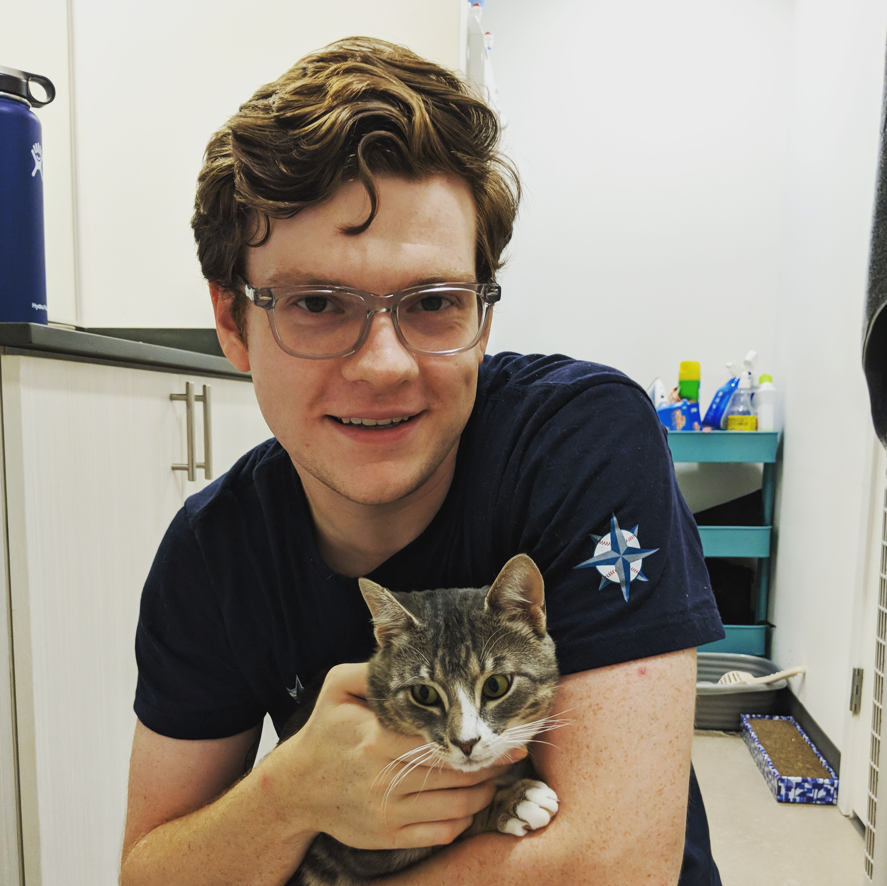

publicthis is the website of Samuel Zachary Braley

group_worki make stuff. programmer, sketch artist, game designer, Texan, husband and cat dad
worki am currently a software engineer at Qualtrics. formerly worked at Squarecap and the Texas Alliance for Minorities in Engineering
schooli am a UT graduate (obligatory hook'em™), with a BS in CS and two minors: video game design and business
placecurrently living in Seattle WA, USA
facecheck out my various creations:
- emailsam at samuelbraley.xyz - my internet mailing address
- person_addlinkedin - my professional profile; reach out to me here for anything job related or if you want to network!
- videogame_assetitch.io - games i've designed
- notifications_activetwitter - drawings and short thoughts
- editmedium - longform thoughts and written stories
- camera_rollinstagram - photos i've taken
- desktop_windowstwitch.tv - i occasionally stream
- brushdeviantart - art i've made
- subscriptionsyoutube - some random videos i've filmed
- memorygithub - code i've written (i think all my repos are private but linking this anyways)
- 3d_rotationsketchfab - 3D models i've crafted